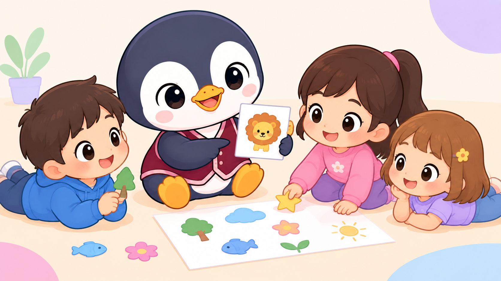

3 a 5 años

Párvulos
Annet & Damaris
La Creación y la Vida de José
Dios creó todas las cosas bellas con amor y siempre cuida de nuestras vidas y familias, guiando nuestros pasos tal como cuidó de José.